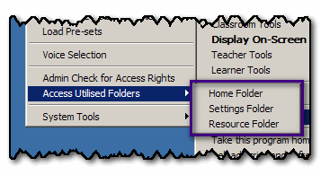

Access Utilised Folders
You can open all the folders that the Teacher Toolkit uses:

In case you would like to copy something from/into the Home Folder, or manually alter the settings stored in the Settings Folder.